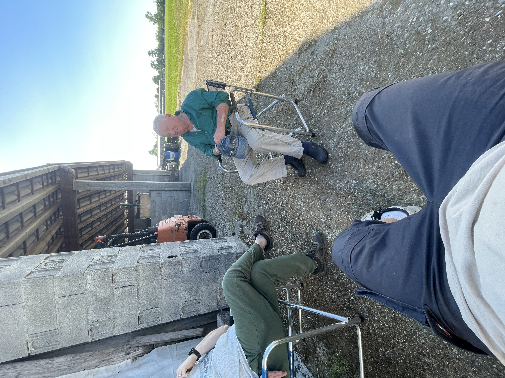

Chi sono
Sono Gabriele Corbetta, ho 17 anni. Sono nato nel 2008 a Treviglio (BG). Ho una sorella più grande di 5 anni che si chiama Gaia. Attualmente frequento l'itis Archimede indirizzo informatico e spero che nel futuro possa specializzarmi in un campo che mi appassiona. Durante questi quasi 4 anni di scuola ho imparato molte cose, riguardo l'informatica, ma ho avuto il piacere di conoscere anche persone fantastiche, che mi hanno aiutato a crescere e a migliorare sia come persona che come studente.
Percorso Scolastico
- SCUOLA PRIMARIA - PLESSO "MOZZI" I.C. TOMMASO GROSSI
- SCUOLA SECONDARIA DI PRIMO GRADO - I.C. TOMMASO GROSSI
- SCUOLA SECONDARIA DI SECONDO GRADO - ITIS ARCHIMEDE INDIRIZZO INFORMATICO
Attualmente frequentando l'itis Archimede al quarto anno.

Interessi e Passioni


Mi piacciono molto i videogiochi, in particolare quelli che hanno una storia coinvolgente e un gameplay interessante. Uno dei miei giochi preferiti è la saga dei Metro. Attualmento sto completando Pragmata, la cui storia si basa su un austronauta mandato sulla Luna per indagare su un malfunzionamento e si ritrova a combattere la corporazione che lo ha mandato lì, il tutto con l'aiuto di una androide. Oltre ai videogiochi, mi piace anche guardare film e serie TV, soprattutto quelle di fantascienza e avventura. Uno dei miei film preferiti è Oppenheimer. Infine quando mi ritrovo a casa dei miei nonni mi piace aiutarli nelle loro faccende contadine.